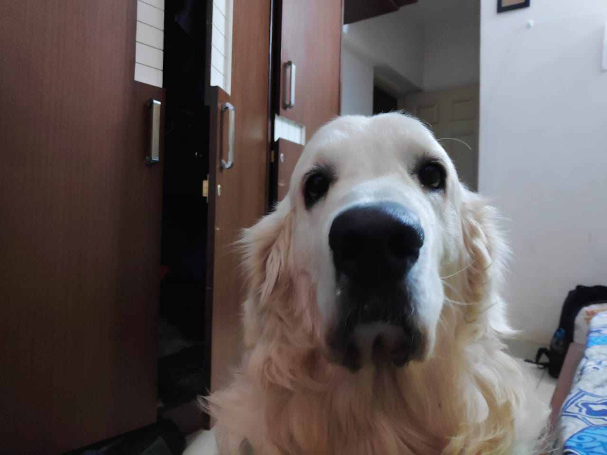
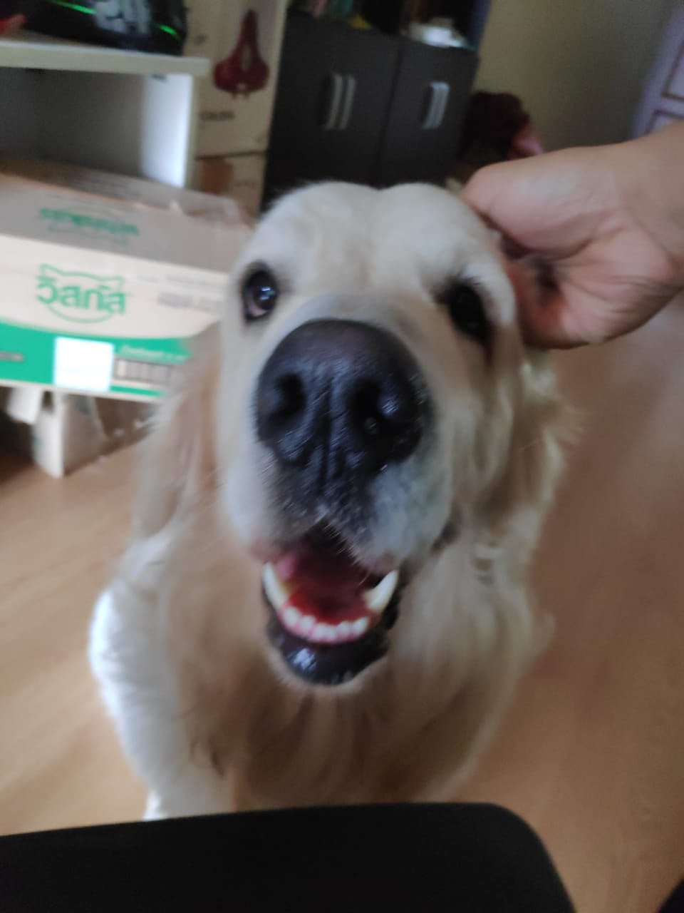

THIS IS SOLID STATE
CAN SAMARA BE AVOIDED?
GENTLEMAN

You speak dog better than you think you do. You may not be fluent; that would require actually being a dog. But if you went to live in a dogs-only world, you’d be pretty good at understanding what they’re saying. You can tell a nervous yip from a menacing growl, a bark that says hello from a bark that says get lost. You can read the body language that says happy, that says sad, that says tired, that says scared, that says Please, please, please play with me right now!
LEARN MORECARING
Think that’s not a big deal? Then answer this: What does a happy bird look like? A sad lion? You don’t know, but dog talk you get. And as with your first human language, you didn’t even have to try to learn it. You grew up in a world in which dogs are everywhere and simply came to understand them. That, by itself, says something about the bond that humans and dogs share. We live with cats, we work with horses, we hire cows for their milk and chickens for their eggs and pay them with food—unless we kill them and eat them instead.
LEARN MOREFUNNY
Our lives are entangled with those of other species, but we could disentangle if we wanted. With dogs, things are different. Our world and their world swirled together long ago like two different shades of paint. Once you’ve achieved a commingled orange, you’re never going back to red and yellow. But why is that? It’s not enough to say that the relationship is symbiotic—that dogs hunt for us and herd for us and we keep them warm and fed in return. Sharks and remora fish struck a similarly symbiotic deal, with the remora cleaning parasites from the shark’s skin and getting to help itself to scraps from the shark’s kills as its pay.
LEARN MORE